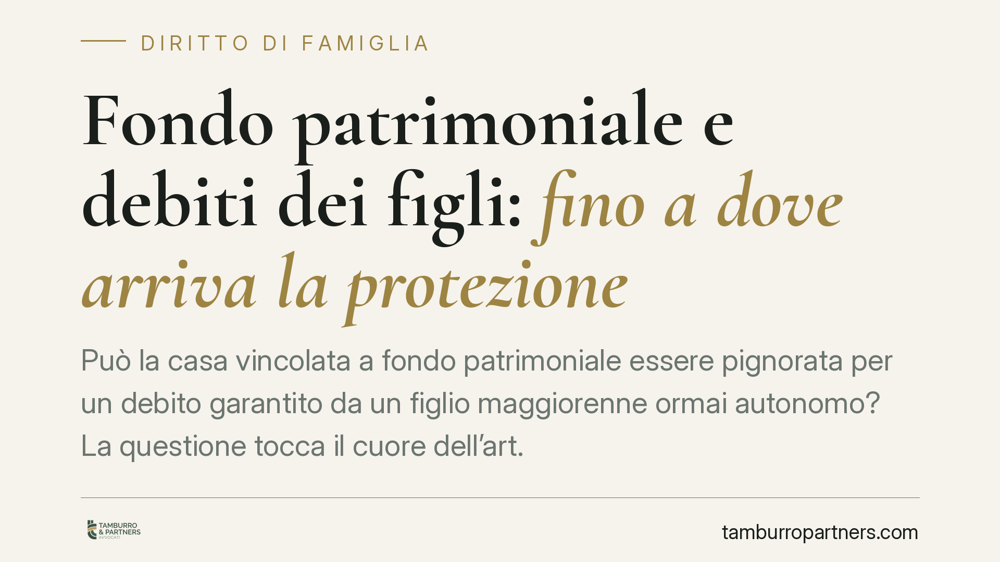

Fondo patrimoniale e debiti dei figli: fino a dove arriva la protezione
Può la casa vincolata a fondo patrimoniale essere pignorata per un debito garantito da un figlio maggiorenne ormai autonomo? La questione tocca il cuore dell'art. 170 del Codice civile e il concetto di "bisogni della famiglia". Una recente pronuncia di legittimità torna sul tema, ma il principio non è un automatismo: la protezione dipende da fatti concreti e va valutata caso per caso.

Il fatto
Il tema ricorrente è questo: genitori che hanno costituito un fondo patrimoniale sulla propria abitazione si vedono aggredire l'immobile da un creditore (spesso una banca) per un debito che fa capo a un figlio maggiorenne, economicamente indipendente e con un proprio nucleo familiare autonomo.
La domanda giuridica è se quel debito rientri o meno tra i "bisogni della famiglia" ai quali il fondo è destinato. Segnaliamo che una recente pronuncia di legittimità sarebbe intervenuta in senso restrittivo, escludendo dal perimetro dei bisogni familiari le obbligazioni assunte da figli adulti ormai fuori dal nucleo dei costituenti. Riportiamo il principio in forma prudenziale: la massima, ove confermata nei termini divulgati, riflette la specifica fattispecie decisa e non introduce alcun automatismo generale.
Inquadramento normativo
Il fondo patrimoniale è disciplinato dagli artt. 167 e seguenti del Codice civile. È un vincolo di destinazione che uno o entrambi i coniugi (o un terzo) imprimono su determinati beni per far fronte ai bisogni della famiglia.
La norma centrale in materia di aggressione dei creditori è l'art. 170 c.c.: l'esecuzione sui beni del fondo e sui loro frutti non può avere luogo per debiti che il creditore conosceva essere stati contratti per scopi estranei ai bisogni della famiglia.
Due elementi, quindi, operano insieme:
- l'estraneità del debito ai bisogni della famiglia;
- la conoscenza di tale estraneità da parte del creditore al momento in cui il credito è sorto.
Sul piano dell'onere probatorio, l'orientamento prevalente colloca in capo a chi eccepisce l'impignorabilità — di regola il debitore o chi si oppone all'esecuzione — l'onere di dimostrare sia l'estraneità del debito ai bisogni familiari, sia la conoscenza di tale estraneità da parte del creditore. Si tratta di una ripartizione che la giurisprudenza applica in modo articolato, valorizzando gli indizi concreti della singola vicenda.
La nozione di "bisogni della famiglia" è più ampia dello stretto necessario e comprende anche esigenze di sviluppo e di serena conduzione della vita familiare. Resta però ancorata al nucleo per il quale il fondo è stato costituito.
Implicazioni pratiche
Per i genitori costituenti, il messaggio è duplice.
Da un lato, il fondo può effettivamente sottrarre l'abitazione all'aggressione per debiti che nulla hanno a che vedere con i bisogni del loro nucleo: tanto più quando il figlio è adulto, indipendente e titolare di una propria famiglia.
Dall'altro, la protezione non è mai una barriera invalicabile. Il creditore dispone di strumenti di reazione. Il più rilevante è l'azione revocatoria (art. 2901 c.c.): se il fondo è stato costituito quando il debito era già sorto o prevedibile, con l'effetto di rendere più difficile il recupero, il creditore può chiederne l'inefficacia nei propri confronti. In tal caso il bene torna aggredibile.
Conta anche il fattore tempo: un fondo costituito "a ridosso" dell'insorgere delle difficoltà espone al sospetto di intento elusivo. La solidità della protezione dipende dalla genuinità e dalla tempistica della costituzione, non dalla mera esistenza del vincolo.
Cosa fare in concreto
- Ricostruite la cronologia. Verificate la data di costituzione del fondo rispetto al momento in cui è sorto il debito del figlio: è il primo dato che un creditore analizzerà in ottica revocatoria.
- Documentate l'estraneità del debito. Raccogliete prove che l'obbligazione riguarda il nucleo autonomo del figlio e non i bisogni della famiglia dei costituenti (residenze separate, autonomia economica, destinazione delle somme).
- Valutate la posizione del creditore. Verificate cosa il creditore conosceva al momento della concessione del credito: la sua consapevolezza dell'estraneità è elemento decisivo ai fini dell'art. 170 c.c.
- Non costituite un fondo "in emergenza". Un vincolo istituito quando i debiti sono già maturati offre protezione fragile ed espone alla revocatoria.
- Fatevi assistere prima di agire. Sia in caso di opposizione all'esecuzione, sia in fase di pianificazione patrimoniale, la valutazione va fatta sui fatti specifici e sulla documentazione disponibile.
In sintesi: il fondo patrimoniale è uno strumento serio di tutela, ma la sua efficacia si misura sul caso concreto, non su formule generali.
---
Contributo informativo a cura di Tamburro & Partners Avvocati - Avv. Giuseppe Tamburro. Non costituisce parere legale.
Ogni famiglia ha il suo equilibrio.
Separazione, divorzio, affidamento, assegno: se vuoi un confronto riservato su una specifica situazione, scrivi allo studio. Ti rispondiamo entro un giorno lavorativo.